Room 1 四墙 r11：清除旧做旧后，用 PixelLab 统一重做
只保留配色与建筑结构。新母版没有旧上沿、墙脚、矩形膜或大块色差图层。来源与限制。B键仅切换历史对照。
干净输入 → PixelLab 新材质
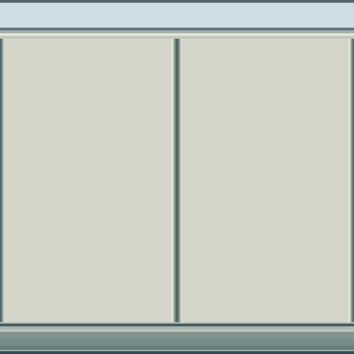
clean_guide_2x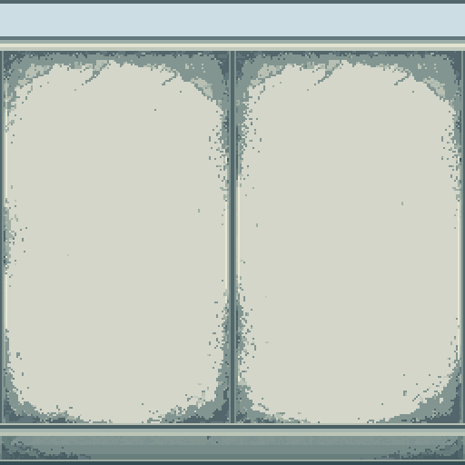
material_new_2x游戏左／中／右，修前 → 修后
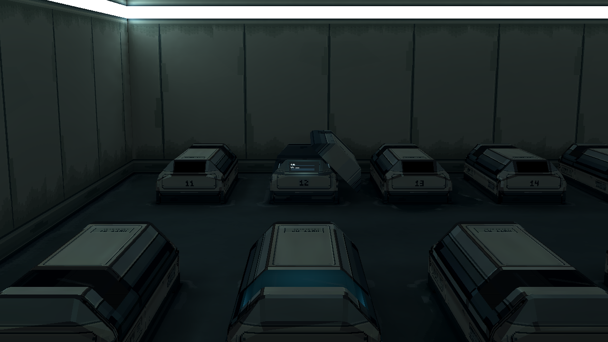
game_left_before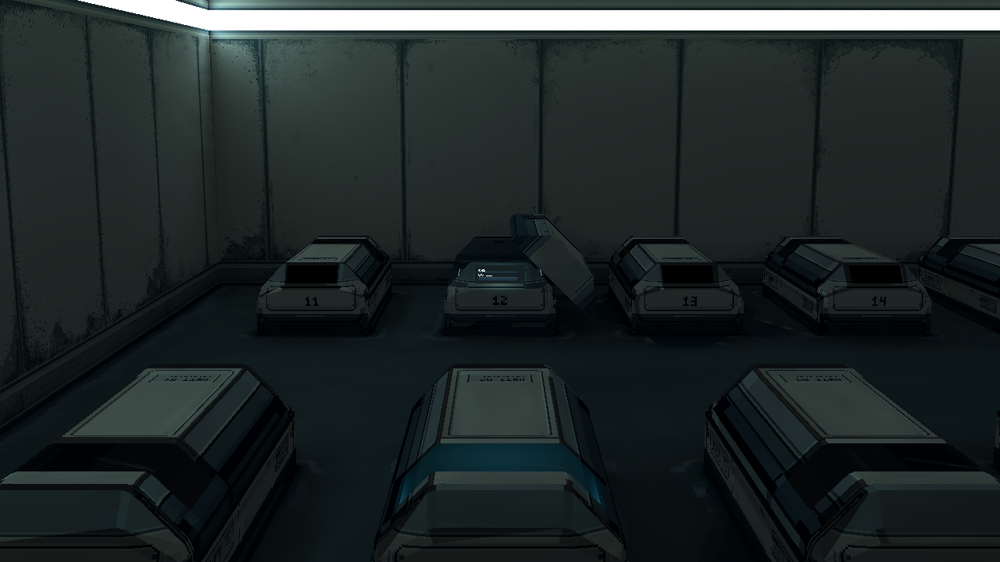
game_left_after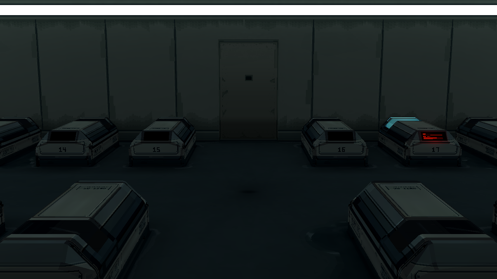
game_center_beforegame_center_after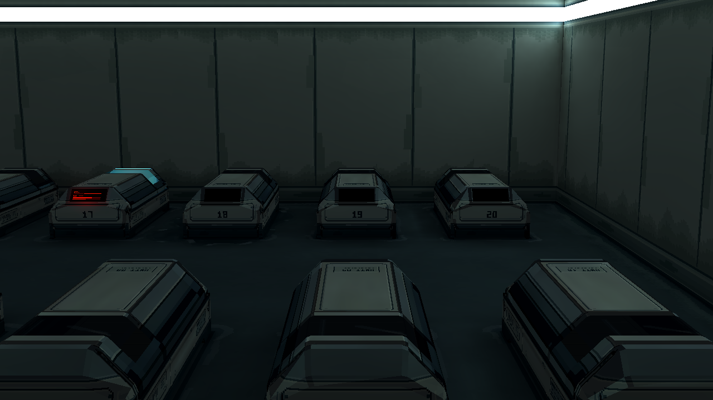
game_right_before game_right_after
game_right_after近景修前 → 修后
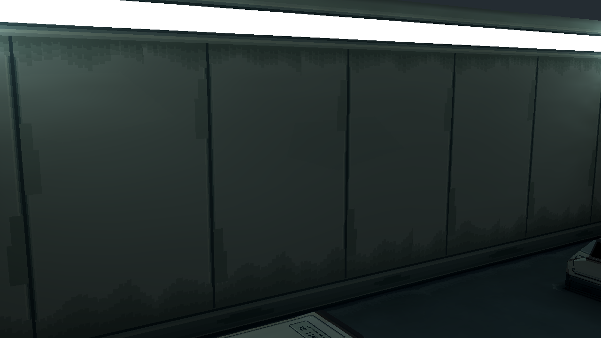
technical_before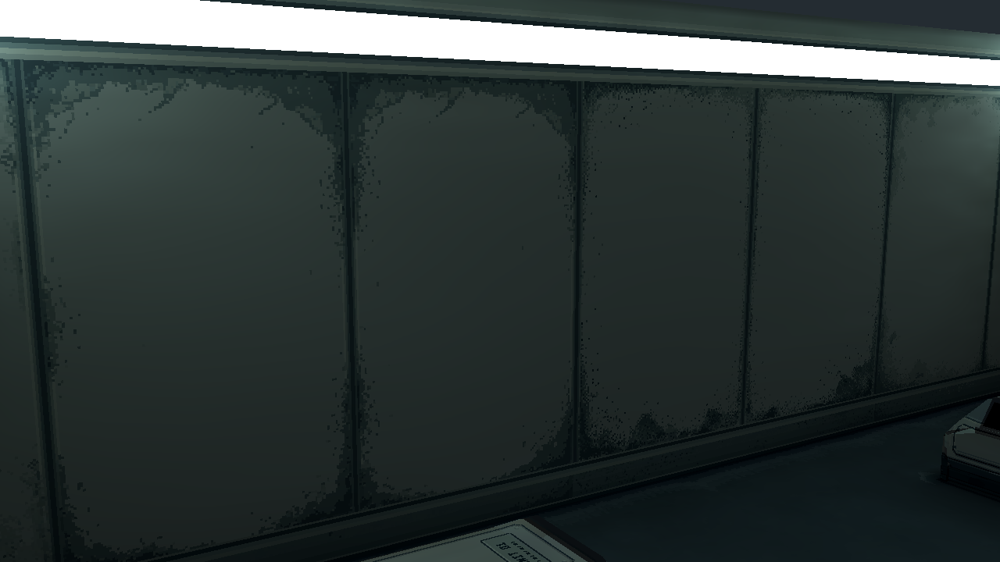
technical_after颜色诊断修前 → 修后
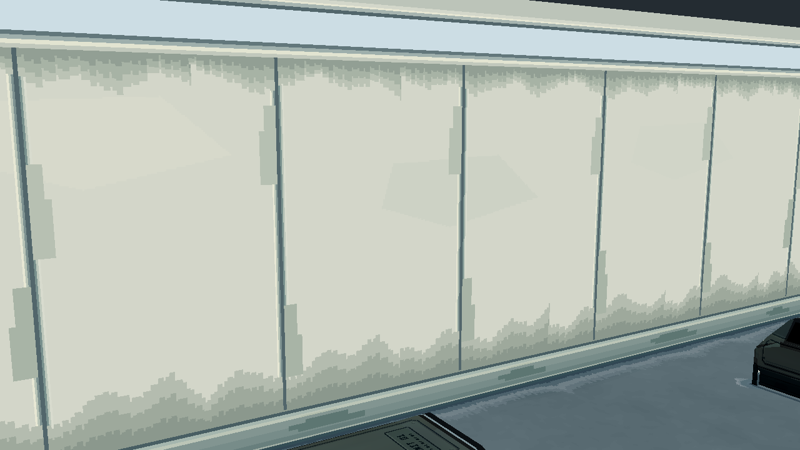
base_color_before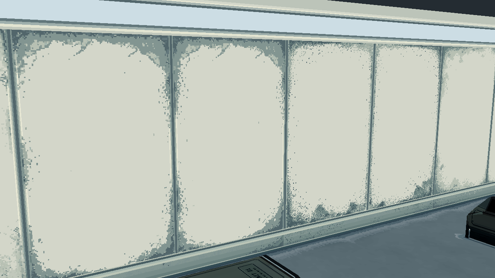
base_color_after四墙新贴图
四角与前墙巡检
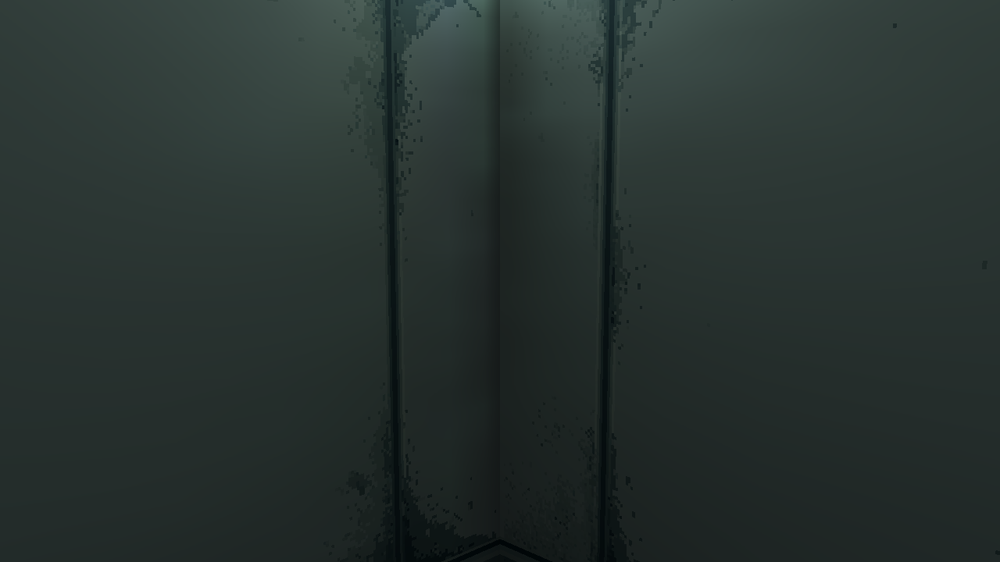
survey_front_left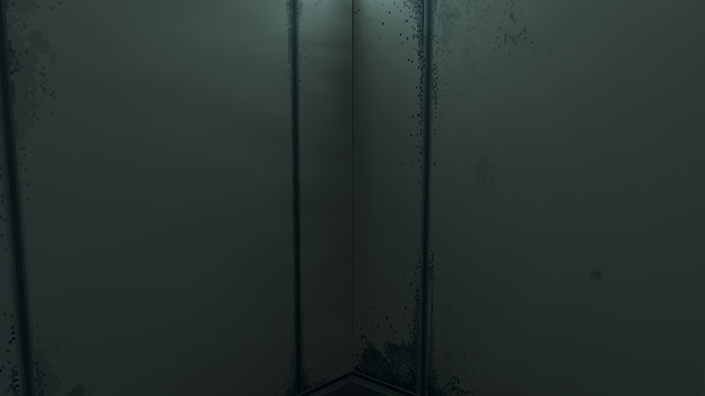
survey_rear_left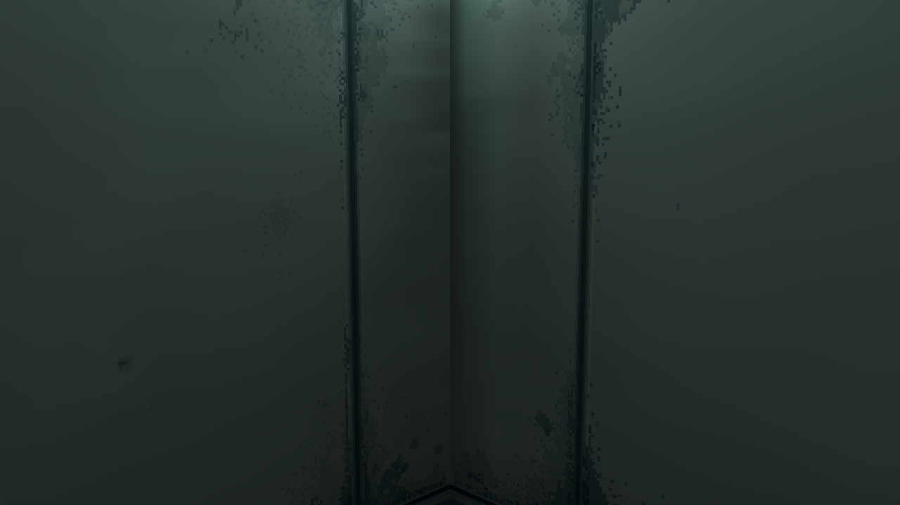
survey_front_right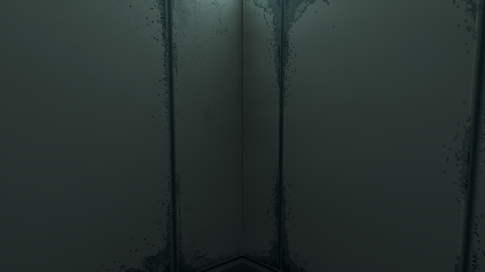
survey_rear_right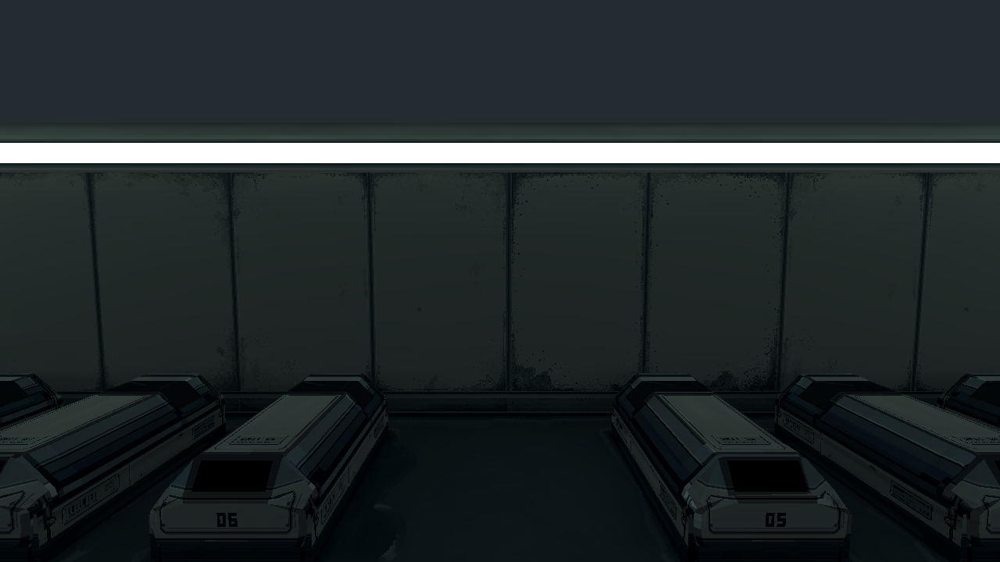
survey_front_full